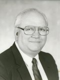

|
|
颂主新歌 |
|
|
1.我有真神为倚靠，因此喜乐，
|
|
|
|
|
|
|


Landrum Guy L.G. McKinney
1930-2012
麥堅理牧師 Rev. L. G. Mckinney, Jr.

AN ANGELO Landrum Guy "L.G." McKinney was born April 2, 1930, in Houston, Texas, to Peggy and Landrum Guy McKinney Sr. He passed away peacefully Tuesday, July 17, 2012, in San Angelo. L.G. had a passion and gift for music.He learned to play the trumpet as a young man and in his early teens was much in demand as a player in dance bands. As a high school junior he began studies in voice at the Houston Conservatory and was first chair trumpet and concertmaster at Reagan High School. One of his best friends there at Reagan High was Hal Lindsey, the noted end times writer.
L.G. was a lifelong student and scholar. He earned a Bachelor of Music (1952) and a Master of Music (1966) from Baylor University and a Master of Divinity (with languages) (1956) from Southwestern Baptist Theological Seminary where he continued to study and had all but dissertation toward a Doctorate in Administration and Music. A lifelong interest in minerals and gemstones led him to study for the Graduate Gemologist Diploma from the Gemological Institute of America (1980). It was while at Baylor that L.G. met his wife, Florence Ann Fielder, the daughter of missionary parents from China. They were married in 1953.
L.G. later related that their marriage had given him a new sense of fulfillment and said that "the companionship we have shared in all things has been wonderful beyond all imagination."
In 1956, Flo and L.G. were appointed as Southern Baptist missionaries with the Hong Kong Macao Baptist Mission with which they served until 1982. Their family grew while they were on the field with the births of son Daniel Scott in 1961, and daughter Debra Jean in 1964. An only child, the declining health of L.G.'s parents forced the couple's early retirement (1984) and the family's return to the United States from their home in Hong Kong.
L.G. loved his family, music, eating, spear fishing and diving, cooking, birds, rocks and music among a host of other interests. He learned to fish while in high school and was so taken with the sport that he professed himself a "lifetime victim of fishing-pox". He said, however that he also "learned many lessons from fishing: for example, when they don't bite I learn patience; when they bite rapidly I learn not to be greedy; when the big one gets away I learn to laugh at my disappointment; and sometimes I have to try many different places, baits and procedures to achieve results." These lessons L.G. applied to life. He was patient and persistent especially in his efforts to draw others to the Lord he loved so much. He often used the gift of music to speak to and open the hearts of those he was trying to reach. He was a much sought after vocal soloist and presented concerts throughout Asia. From 1958-1963, he conducted the Hong Kong Oratorio Society.
L.G. with his music background had a keen ear for languages and on a two-week trip to Surabaya, Indonesia, in 1976, was able to sing and lead worship in Bahasa after only a few days on the ground. He preached his first sermon in Cantonese after only nine months of language study. He was the music editor at Hong Kong Baptist Press where his crowning achievement was an eight-year project in the making - New Hymns of Praise - the first Chinese hymnal produced since 1927. The hymnal is used extensively in Chinese churches worldwide. For his contributions to this work, which included hymn arrangements, L.G. was honored by David Lam, the former lieutenant governor of British Columbia in a celebratory concert in Vancouver, in 2002. L.G.'s music wasn't limited to concert halls and churches, however. In one instance, he took his autoharp and played outside a Chinese walled village until, over a period of time, his music drew first the children and then the adults of the village to listen. In time, the villagers invited him to enter and he had an opportunity to share not only his music but his love of Christ with them.
Along with fishing, L.G. loved scuba diving, sailing, navigation and marine biology and he put those interests to special use as Director and Charter Member of Adventure Ship Corporation, a charitable organization which sponsored Christian training programs aboard the S.S. Huan, a 90-foot Chinese sailing junk. The program not only served disadvantaged youth, but gave special opportunities for service to the MKs (missionary kids) who helped maintain the vessel and taught classes onboard. As a graduate gemologist, his knowledge and expertise in the field gained him an entree with jewelers and the opportunity to share the greatest treasure of all.
He is survived by his wife, Florence Ann Fielder McKinney; son Dan and his wife, Rebecca, and their two daughters, Ariel and Annalise of Malaysia; and daughter Debra and her husband, Virgil Childers, of Houston. The family is especially grateful to staff, nurses, physical therapists and CNAs who have been so loyal and loving in his care. To L.G.'s physician, Dr. Nussey, the family expresses deep appreciation for his compassionate care. A memorial service will be held at 10 a.m. Monday, July 23, in the Baptist Retirement Community Chapel, 902 N. Main St., San Angelo, 76903. Memorials may be made to Baptist Retirement Community Auxiliary or Mercy Mission Ministries Foundation mmfthailand.org. Family and friends may sign the online register book at johnsons-funeralhome.com.
https://www.legacy.com/us/obituaries/gosanangelo/name/landrum-mckinney-obituary?id=13456793